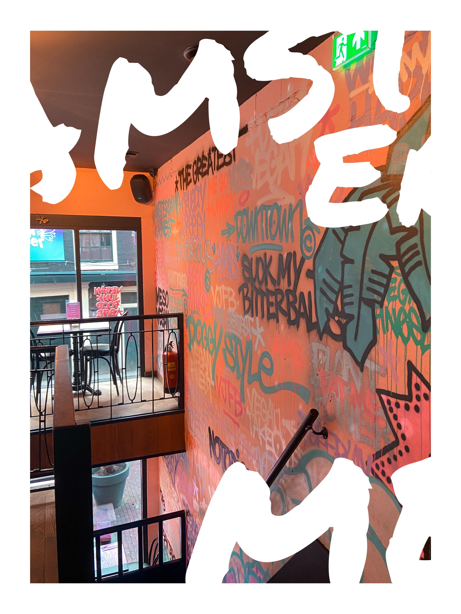
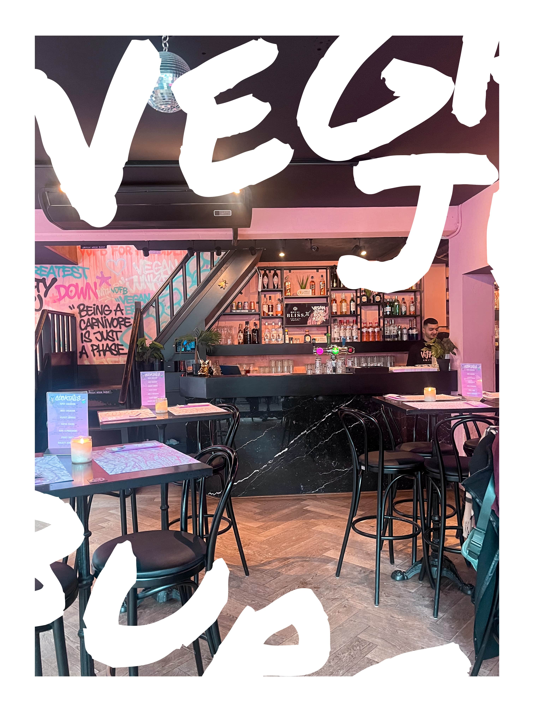

Vegan Junk Food Bar


Wat hebben ze allemaal?
Alles is vegan, ze hebben bijvoorbeeld hamburgers, snack voor in de frituur denk aan zelf gemaakte bitterballen, nachos en ga zo maar door.
Alles is vegan, ze hebben bijvoorbeeld hamburgers, snack voor in de frituur denk aan zelf gemaakte bitterballen, nachos en ga zo maar door.